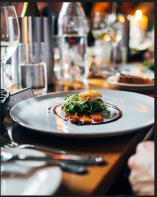

Specials
Our specials bring together premium ingredients, careful technique, and generous flavour. Each dish is prepared to feel refined without losing the warmth of a memorable restaurant meal.
Highlands Waygu - £30
Cod Supreme - £24
Lamb Rack - £20
Angus Fillet Steak - £30
Cote de Boeuf - £25
Wine and Beer
Our drinks list is selected to complement the menu, from rich reds for steaks and lamb to lighter bottles for seafood and relaxed evenings.
Chapel Hill Shiraz - £28
Catena Malbec - £29
La Vieille Rose - £22
Rhino Pale Ale - £15
Irish Guinness - £12
Non-Alcoholic Drinks
Simple, refreshing classics are available throughout service for guests who prefer a lighter option with their meal.
Coca Cola - £5
Diet Coke - £5
Sprite - £5
